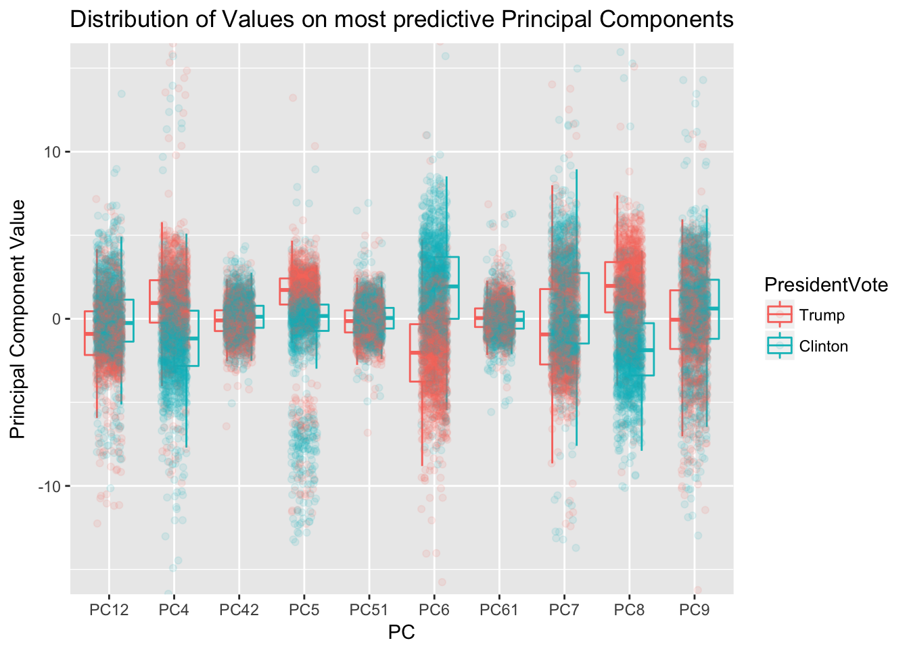
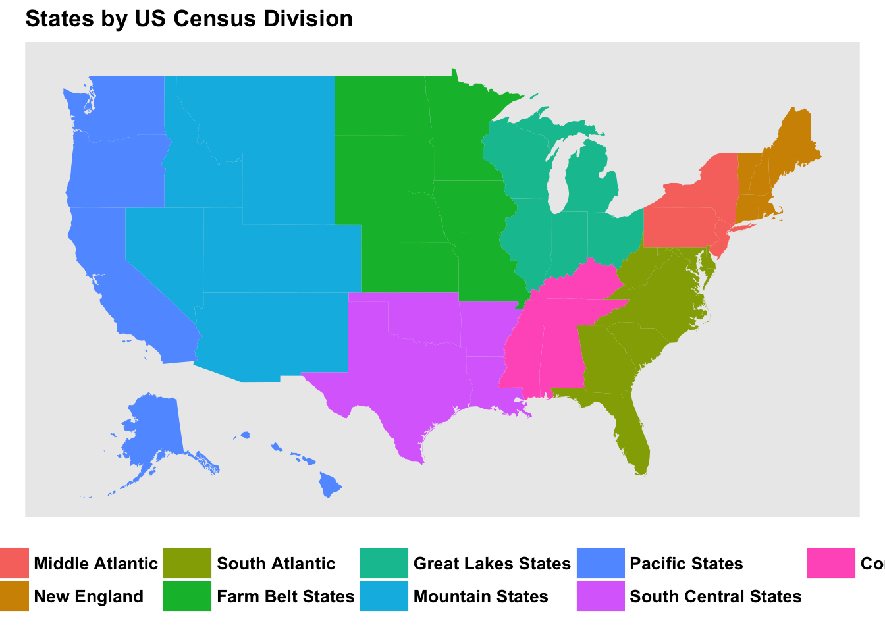
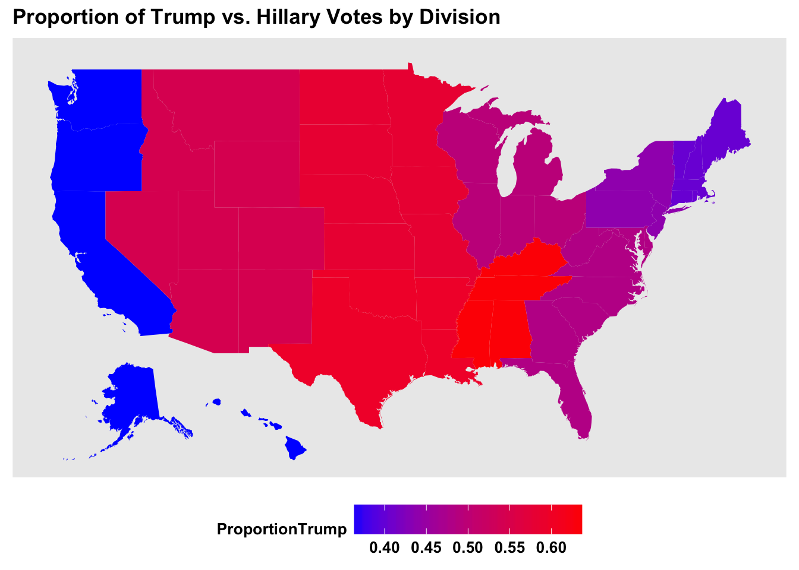
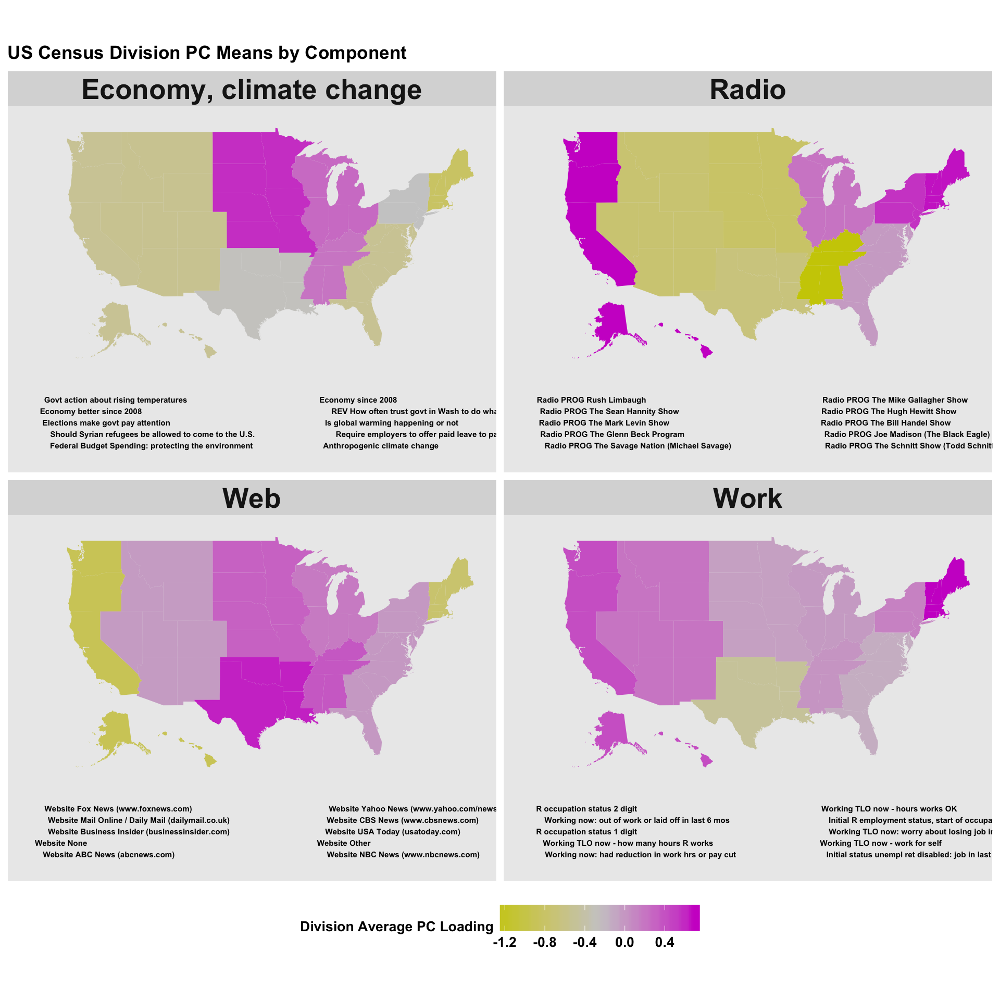

For this analysis, I retried 4271 records of American adults surveyed before and after the 2016 election. I demonstrated separability of the data among several interesting dimensions. Moving forward, we should be able to examine how that separability relates to regional differences in voting patterns.
I calculated the principle components across all the dataset. Principle components analysis is a common dimension reduction technique intended to reduce the dimensionality of the data by rotating the data across the axes of the data that explain the most variance.
After finding the principle components, rather than selecting the components that explained the absolute most variance in the dataset, I selected components that were most predictive of the respondents’ voting records. To simplify the analysis, I selected only people who had voted and who had voted for either Hillary Clinton or Donald Trump.
##
## Trump Clinton
## 1178 1290The graph shows the distribution of respondents’ ten most predictive principle components. Some components, on their own, very clearly separate the voters for each candidate..

## (PresidentVote == "Trump") ~ PC8 + PC6 + PC4 + PC5 + PC12 + PC7 +
## PC42 + PC9 + PC61 + PC51##
## Call:
## glm(formula = as.formula(paste0("(PresidentVote==\"Trump\")~",
## paste0("PC", best.predicting.pcs, collapse = " + "))), family = binomial(link = "logit"),
## data = AllPCs.ClintonTrump)
##
## Standardized Coefficients::
## (Intercept) PC8 PC6 PC4 PC5 PC12
## 0.0000000 5.2453430 -5.0246795 2.1432676 2.3578101 -1.3903281
## PC7 PC42 PC9 PC61 PC51
## -1.4662449 -0.6570749 -1.0359121 0.5835931 -0.6094014Although this is a binomial prediction, I used a linear model below to easily find an \(R^2\) value for predicting voting from these principle components, \(R^2\) across all represents explaining 74% of the variance from the model.
We can then move forward to examine the data in a nationwide map.
What if we do a regional distribution?
These are the divisions we’ll be using:

And this is what voter behavior looks like by division:

Here’s a few important principal components along with their distributions across the country:

While media consumption (Radio vs. Web) tends to divide the Pacific States and New England with all other states, other issues divide along differnet geographic lines. On the economy and climate change, the Midwest sits squarely on one side, New England in the other, and the South and West sit somewhere in between. On perceptions of work availability, Texas and neighboring states stand apart.